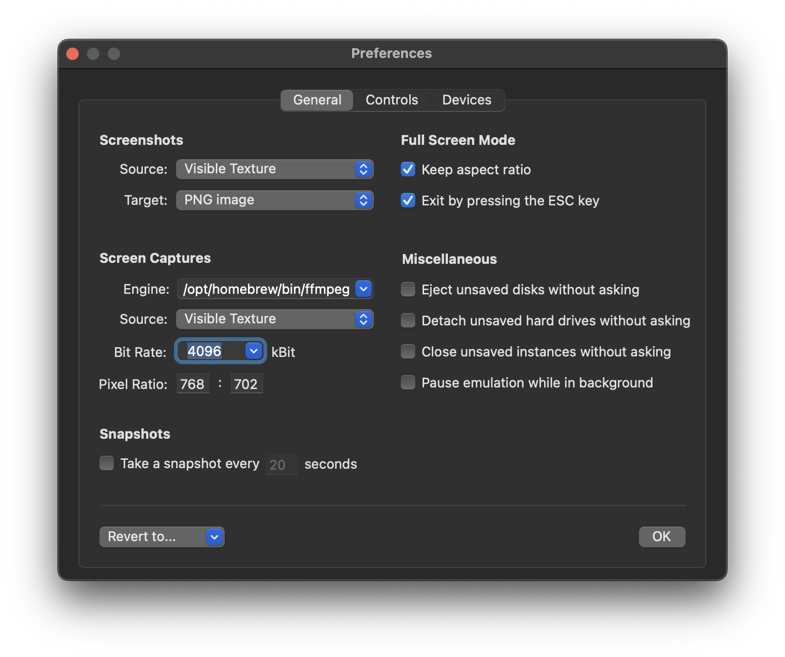

General Panel
Contents
General Panel#
Use this panel to change general settings, such as the screenshot and video format, or the behavior in warp or fullscreen mode.

Snapshots#
vAmiga can be configured to take a snapshot at regular intervals. Originally, This option was added to master difficult games. Please keep in mind that snapshots are intended for being used as temporary save-points and not as a long-term preservation format. A snapshot created with the current version of vAmiga will most likely not be readable in the next.
Screenshots#
The options in this category allow the user to customize the source, layout and target format of a screenshot.
Screen captures#
vAmiga features a screen recorder that utilizes FFmpeg as a backend. The options in this category allow the user to set various recording parameters. Please note that FFmpeg cannot be bundled with the emulator due to licensing constraints. Before using the screen recorder, you must manually install FFmpeg on your computer.
Warp mode#
In warp mode vAmiga runs at maximum speed, i.e. it starts computing the next frame right after the current frame has been completed. Warp mode can be configured as always off, always on or automatically enabled. In auto mode, warp mode is linked to the disk drive logic. It turns on and off just as the drive motor does. This mode significantly reduces loading times and works quite well in most cases. However, some applications are coded to not turn off the drive motor even when no data is being transmitted. In such cases, auto mode must be turned off manually by the user.
Full screen mode#
The first option lets you select the full-screen layout. The second option determines whether the ESC key should function as an emulation key or as a control key to exit the full screen mode.
Miscellaneous#
The options in this category determine how vAmiga should react to certain events such as ejecting a floppy disk or closing an emulator window. For example, one option determines how vAmiga will behave when a floppy disk containing unsaved data is ejected. Unlike other emulators, vAmiga is designed to not modify media files. For example, if an ADF has been inserted into a floppy drive, the floppy disk can be modify without hesitation. The original ADF remains untouched. The disadvantage, however, is that you have to export a disk manually to preserve the new content.